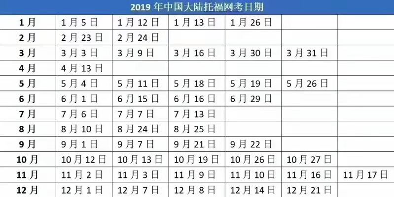
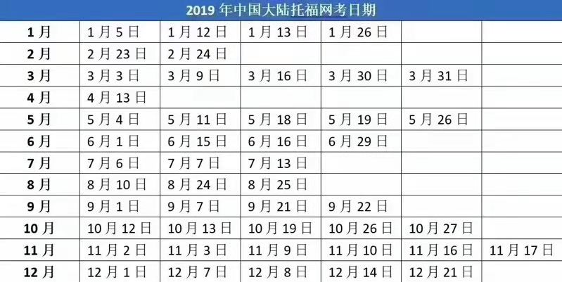

托福抢先看！眼看2018年即将过去，2019年托福考试时间出炉，为了让大家更加高效的准备托福考试，新航道杭州学校小编为大家整理了2019年托福考试时间安排，大家可以根据自己的时间妥善安排好时间。
即日起开放2019年中国托福网考报名。请考生在报名前务必仔细阅读托福考试相关服务条款和规定。特别提醒中国户籍的考生在报名前必须确认已经办理二代居民身份证或所持二代居民身份证在考试日仍在有效期内。

来源：杭州小编 浏览： 发布日期：2012-01-16 00:00
托福抢先看！眼看2018年即将过去，2019年托福考试时间出炉，为了让大家更加高效的准备托福考试，新航道杭州学校小编为大家整理了2019年托福考试时间安排，大家可以根据自己的时间妥善安排好时间。
即日起开放2019年中国托福网考报名。请考生在报名前务必仔细阅读托福考试相关服务条款和规定。特别提醒中国户籍的考生在报名前必须确认已经办理二代居民身份证或所持二代居民身份证在考试日仍在有效期内。
